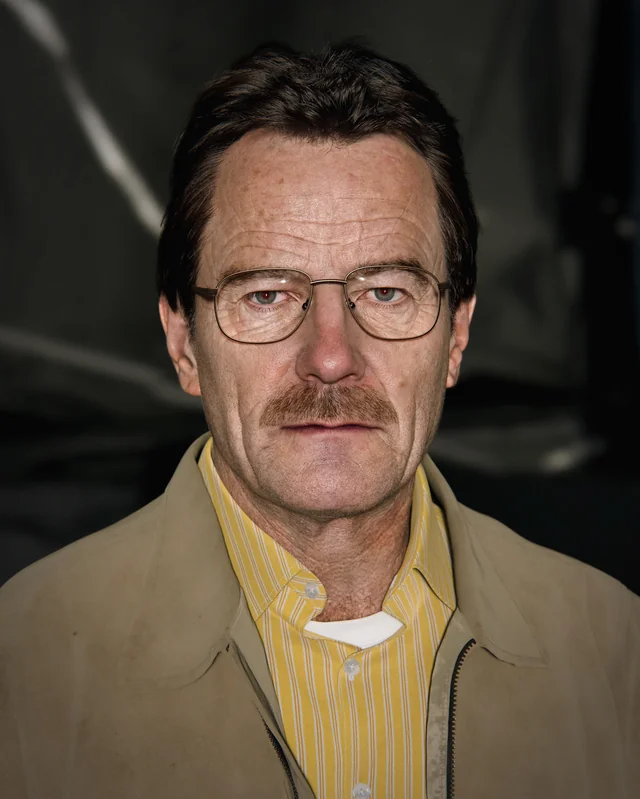
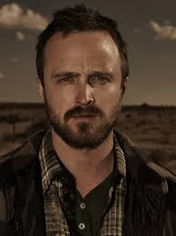
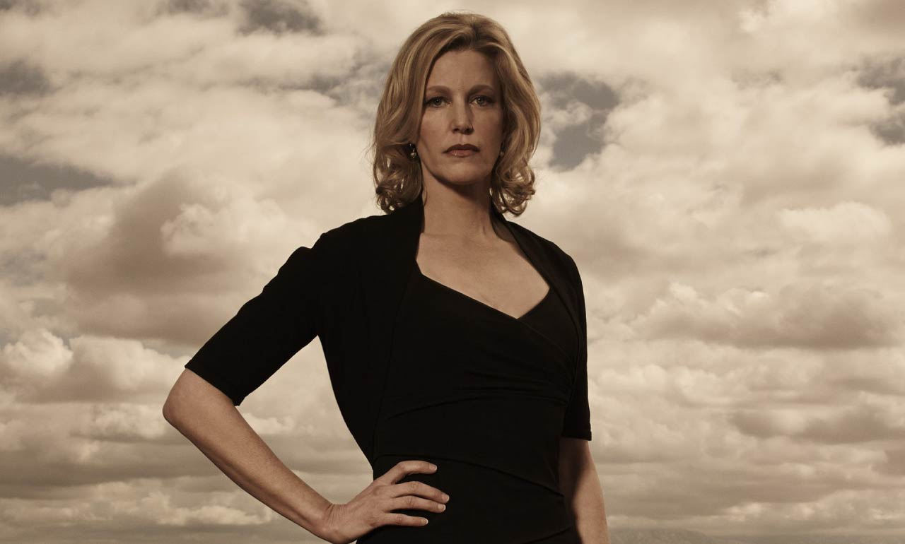
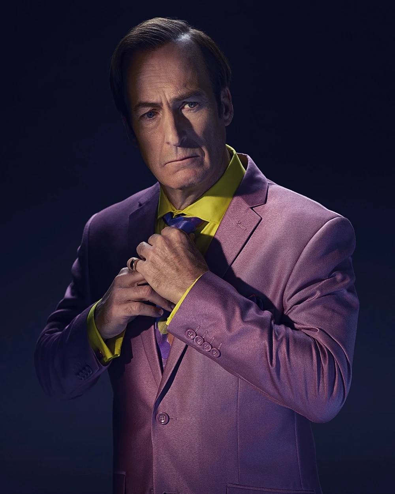
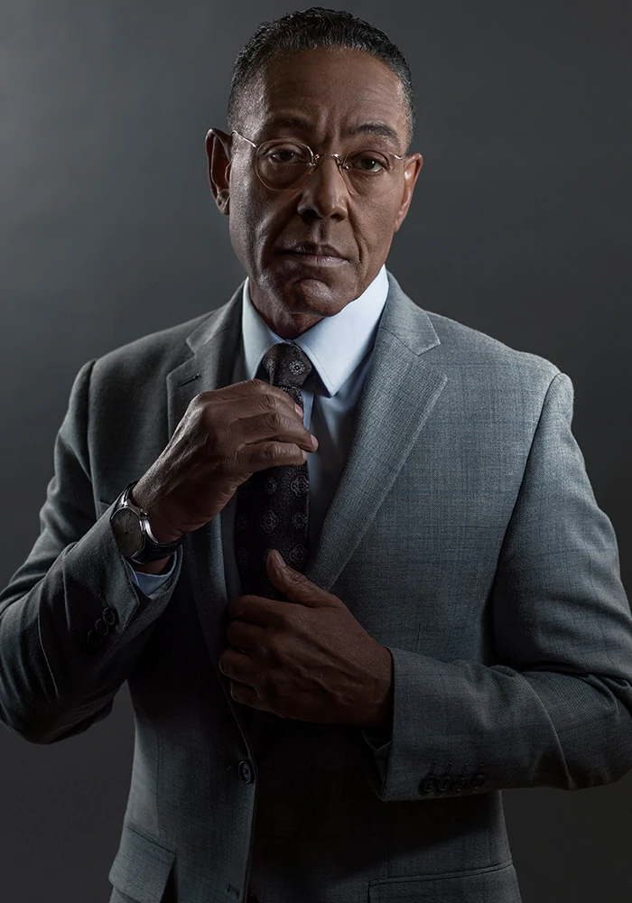

Adéntrate en el oscuro y fascinante universo de Walter White, un profesor de química que se transforma en el temido narcotraficante Heisenberg.
Explora la mejor serie de televisión según Guinness World Records, con 16 premios Emmy y una legión de fans en todo el mundo.
Sobre Breaking Bad
Breaking Bad es una serie de televisión estadounidense que se
emitió entre 2008 y 2013, creada y producida por Vince Gilligan. Narra
la historia de Walter White (Bryan Cranston), un profesor de química con
problemas económicos a quien le diagnostican un cáncer de pulmón
inoperable. Para pagar su tratamiento y asegurar el futuro económico de
su familia, comienza a cocinar y vender metanfetamina junto con Jesse
Pinkman (Aaron Paul), un antiguo alumno suyo. La serie, ambientada y
producida en Albuquerque (Nuevo México), se caracteriza por sus escenarios
desérticos y por la tendencia en la historia de poner a sus personajes en
situaciones que aparentemente no tienen salida, lo que llevó a que su
creador la describa como un wéstern contemporáneo.
Síguenos para contenido exclusivo, noticias y más sobre el universo de Breaking Bad
Últimas publicaciones oficiales
breakingbad
hace 2 semanas
Mortal Kombat Mobile x Breaking Bad collab is coming! Who would win in a fight: Heisenberg or Scorpion? #BreakingBad #MortalKombat
45.2k 1.3k
Breaking Bad
hace 3 semanas
RENAM KLASH 604 SEASON SEASON. TOP RAMS & RENAIRES. GRAVED AND COLD. YEAR EURER 600 COLD SHELL 600
28.4k 892 1.2k
Breaking Bad@BreakingBad
hace 1 mes
Remember when Walter White said "I am the danger"? Iconic. #BreakingBad #Heisenberg
56.7k 12.3k
Antecedentes
Breaking Bad fue creada por Vince Gilligan, quien previamente
había trabajado como guionista en la serie The X Files, de Fox. Gilligan
quería crear una serie en la que el protagonista se convirtiera en el
antagonista. En una entrevista, dijo: «Históricamente, en la televisión
los guionistas se esfuerzan por mantener a los personajes siempre iguales
durante años o incluso décadas. Cuando noté esto, el siguiente paso lógico
era pensar en cómo podría hacer un programa cuyo principal tema fuese el
cambio». Añadió que su objetivo era transformar a Walter White de un Mr.
Chips a un Scarface. El concepto surgió durante una conversación entre
Gilligan y su colega guionista Thomas Schnauz, quienes, bromeando, dijeron
que si se quedasen sin trabajo, la solución sería «armar un laboratorio de
metanfetamina dentro de un vehículo de recreación e ir por todo el país
cocinando cristales y ganando dinero».
Capítulos importantes
Walter White / Heisenberg

Protagonista de la serie, Walter White es un profesor de química que se convierte en un poderoso narcotraficante tras ser diagnosticado con cáncer. Su transformación en "Heisenberg" es el eje central de la historia.
Interpretado por: Bryan Cranston Ocupación: Profesor de química, fabricante de metanfetamina Rol en la serie: Protagonista y antagonista
Walter White comienza como un profesor de química de secundaria con problemas económicos y un diagnóstico de cáncer terminal. Su transformación en el despiadado narcotraficante "Heisenberg" es el eje central de la serie.
Momentos clave:
- Su primera matanza (Episodio "Crazy Handful of Nothin'")
- "I am the danger" (Temporada 4)
- El enfrentamiento con Gus Fring (Temporada 4)
- Confesión telefónica a Skyler (Episodio "Ozymandias")
- Muerte en el laboratorio (Episodio "Felina")
Jesse Pinkman

Ex alumno de Walter White que se convierte en su socio en el negocio de la metanfetamina. Su evolución desde un joven problemático hasta un personaje profundamente complejo es uno de los arcos más notables de la serie.
Interpretado por: Aaron Paul Ocupación: Fabricante y distribuidor de metanfetamina Rol en la serie: Coprotagonista
Jesse Pinkman es el antihéroe emocional de la serie. A diferencia de Walter, Jesse mantiene un fuerte sentido moral que lo atormenta a lo largo de la serie.
Arcos importantes:
- Relación con Jane Margolis y su posterior muerte
- Adicción a las drogas y rehabilitación
- Esclavitud bajo los neonazis
- Escape final en "El Camino"
Skyler White

Esposa de Walter White y madre de Walter Jr. y Holly. Su personaje muestra el impacto de las acciones de Walter en su familia y su propia transformación de ama de casa a cómplice involuntaria.
Interpretada por: Anna Gunn Ocupación: Contadora, lavadora de dinero Rol en la serie: Esposa de Walter y conciencia moral
Skyler comienza como una esposa y madre preocupada, pero se transforma en cómplice involuntaria de las actividades criminales de Walter. Su personaje es fundamental para mostrar el impacto del crimen en la familia White.
Momentos clave:
- Descubrimiento de las actividades de Walter
- "I fucked Ted" (infidelidad estratégica)
- Participación en el lavado de dinero
- Confrontación final con Walter
Hank Schrader
Cuñado de Walter White y agente de la DEA. Su búsqueda del misterioso "Heisenberg" crea una de las ironías más dramáticas de la serie, sin saber que el criminal que persigue es su propio familiar.
Interpretado por: Dean Norris Ocupación: Agente de la DEA Rol en la serie: Antagonista (sin saberlo)
Hank es el cuñado de Walter y un agente de la DEA que persigue sin saberlo a su propio familiar. Su personaje muestra la ironía trágica de la serie.
Desarrollo:
- Comienza como un macho alfa bromista
- Sufre estrés postraumático tras un ataque
- Se obsesiona con la caza de Heisenberg
- Descubre la verdad sobre Walter
Saúl Goodman (Jimmy McGill)

El extravagante abogado criminalista que representa a Walter y Jesse. Su personaje, lleno de humor y astucia legal, se hizo tan popular que generó su propia serie spin-off: "Better Call Saul".
Interpretado por: Bob Odenkirk Ocupación: Abogado criminalista Rol en la serie: Alivio cómico y conexión con el bajo mundo
Saul es el abogado "criminal" que ayuda a Walter y Jesse a navegar el mundo del crimen. Su personaje es tan popular que generó su propia serie spin-off, "Better Call Saul".
Características:
- Estrafalario y carismático
- Conexiones con el crimen organizado
- Maestro del engaño y la manipulación legal
- Tiene su propio equipo de investigadores (Mike)
Gustavo Fring

Dueño de la cadena de pollos fritos "Los Pollos Hermanos" y poderoso narcotraficante. Gus es uno de los villanos más memorables de la televisión, conocido por su calma imperturbable y métodos meticulosos.
Interpretado por: Giancarlo Esposito Ocupación: Empresario y narcotraficante Rol en la serie: Antagonista principal (temporadas 3-4)
Gus es uno de los villanos más memorables de la televisión. Dueño de la cadena Los Pollos Hermanos, es un narcotraficante meticuloso que opera bajo una fachada de respetabilidad.
Características únicas:
- Control absoluto de sus emociones
- Venganza personal contra el cartel mexicano
- Relación compleja con Walter (admiración y rivalidad)
- Muerte icónica (medio rostro destruido)
Mike Ehrmantraut
Ex policía convertido en solucionador de problemas para el mundo criminal. Mike es conocido por su profesionalismo, su código de honor personal y su relación especial con su nieta Kaylee.
Interpretado por: Jonathan Banks Ocupación: Ex policía, solucionador de problemas Rol en la serie: Seguridad de Gus, luego de Walter
Mike es un personaje lacónico pero profundamente moral (dentro de su propio código). Ex policía corrupto, trabaja primero para Gus Fring y luego para Walter, aunque desprecia sus métodos.
Momentos destacados:
- "Half measures" monólogo (Temporada 3)
- Relación con su nieta Kaylee
- Asesinato ordenado por Walter (Temporada 5)
- Protagonista en "Better Call Saul"
Walter White Jr. (Flynn)
Hijo adolescente de Walter y Skyler White que vive con parálisis cerebral. Su personaje representa la inocencia y el impacto familiar de las acciones de su padre.
Interpretado por: RJ Mitte Ocupación: Estudiante Rol en la serie: Hijo de Walter y Skyler
Walter Jr. es un adolescente con parálisis cerebral que idolatra a su padre sin conocer sus actividades criminales. Su personaje muestra el impacto familiar del viaje de Walter hacia la oscuridad.
Arco emocional:
- Conflicto entre sus padres
- Uso del nombre "Flynn" como rebelión
- Escena del cuchillo (confrontación con Walter)
- Rechazo final a su padre
Hugo Zetina Luna
Correo: 187471@upslp.edu.mx
Matricula 187471
¿Dónde ver Breaking Bad?
Puedes ver Breaking Bad en
Netflix.
La serie está disponible para streaming en calidad HD, doblada y subtitulada en varios idiomas.
Better Call Saul
Better Call Saul es una serie derivada (spin-off) de Breaking Bad, centrada en el personaje del abogado Saúl Goodman, cuyo nombre real es Jimmy McGill. La serie explora su transformación desde un abogado con buenas intenciones hasta convertirse en el cínico y carismático defensor criminal que conocemos en Breaking Bad. Ambientada en los años anteriores a los eventos de la serie principal, también presenta a otros personajes como Mike Ehrmantraut y Gus Fring.
El Camino es una película que continúa la historia de Breaking Bad, centrada en el personaje de Jesse Pinkman tras los eventos del episodio final de la serie. Escrita y dirigida por Vince Gilligan, la película muestra la huida de Jesse y su búsqueda de libertad.